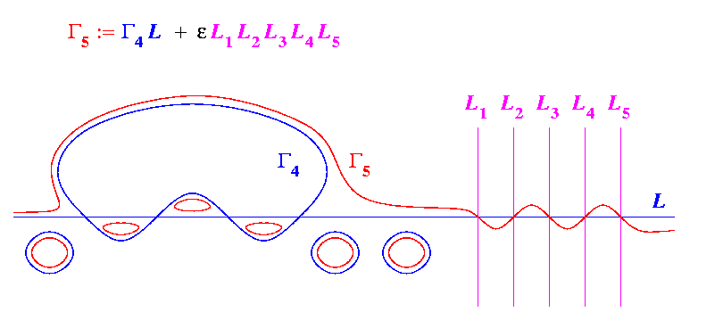

Harnack's Construction
: Quintic

As before, the
Harnack quintic
is a smoothing of a singular quintic using five
auxillary lines
.
The singular quintic consists of the
Harnack quartic
and the fixed
line
.
The resulting
Harnack quintic
consists of one pseudoline and 6 ovals.